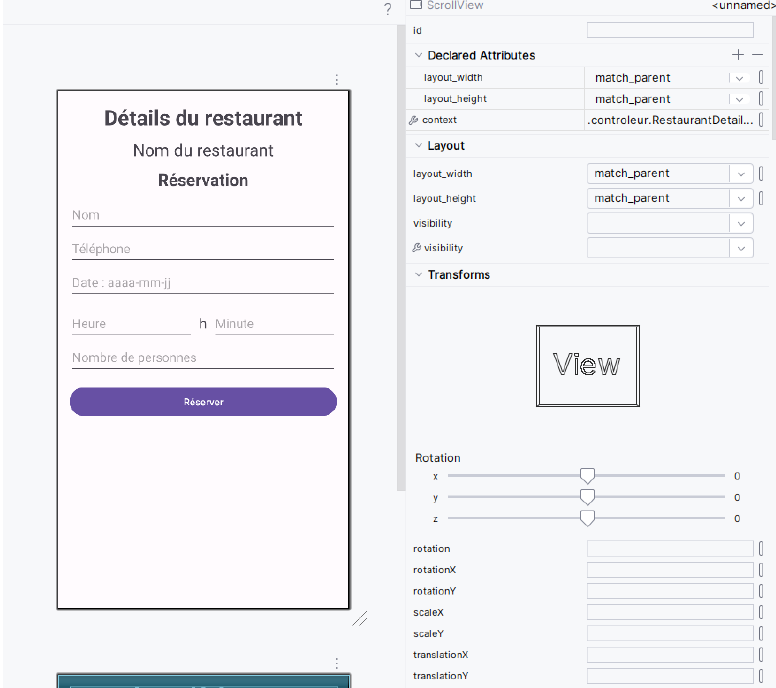

Dans le cadre du Projet 2 Android – Itération 3, j’ai réalisé le Ticket 1 qui consistait à concevoir l’interface utilisateur du formulaire de réservation.
Ce développement a été effectué sur la branche iteration3_ticket1. L’objectif était de permettre à l’utilisateur de saisir facilement les informations nécessaires à la création d’une réservation.
J’ai conçu un formulaire clair et ergonomique comprenant différents champs de saisie adaptés aux données attendues (dates, informations de réservation, boutons d’action, etc.). L’interface respecte les bonnes pratiques Android en matière de lisibilité et d’ergonomie.
Afin d’assurer une bonne maintenabilité de l’application et de faciliter une éventuelle traduction, j’ai également centralisé toutes les chaînes de caractères dans le fichier strings.xml présent dans les ressources du projet.
Cette approche permet à l’interface utilisateur d’aller chercher directement les textes depuis les ressources, évitant ainsi toute valeur codée en dur dans les fichiers XML de layout.
